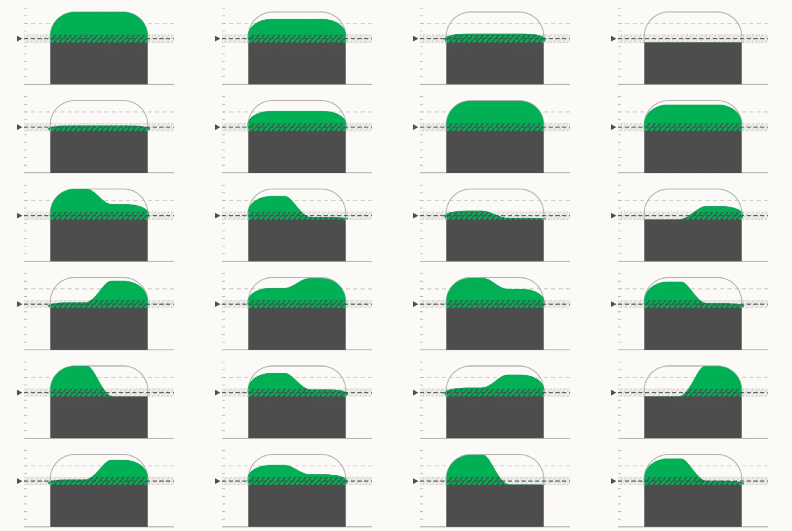
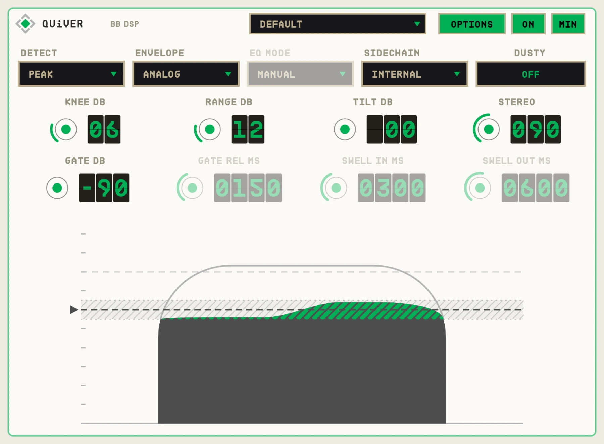

OVERVIEW
QUiVER's tremolo follows your playing. Below the THRESHOLD the sound is untouched. Above it the wobble grows, and reaches MAX DEPTH once you are RANGE dB over. A soft KNEE eases it in, just like a compressor's. Soft passages stay still; accents shimmer.
The same threshold drives a dynamics stage: squash your playing like a compressor, or lift it with upward expansion, plus swells, a gate and an EQ the tremolo can also move.


QUICK START
- 01Insert QUiVER on a guitar, keys or vocal track.
- 02Play, and lower THRESHOLD until your loudest notes start to wobble.
- 03Use RANGE and MAX DEPTH to set how deep the strongest notes go.
- 04Drag the THRESHOLD and RANGE lines in the animation to set them by eye.
HOW IT WORKS
Depth from level
How far over the threshold you play sets the depth. The knee makes the change gradual.
Play with vs set and forget
The main page holds the controls you play with. OPTIONS holds the ones you set once.
Safe output
A limiter at -0.1 dBFS sits at the end, so squash and lift settings can't clip.
CONTROLS
Values in the dark wells are the defaults.
TREMOLO
THRESHOLD-60 to 0 dB
-24
Level where the tremolo starts.
KNEE0-24 dB
6
How gently the tremolo eases in around the threshold.
RANGE1-48 dB
12
How far over the threshold you must go to reach full depth.
MAX DEPTH0-100%
100
Deepest the tremolo will ever go.
SHAPESINE / TRIANGLE / SQUARE
SINE
The LFO wave. The square is rounded so it doesn't click.
RATE / SYNCHz or note values
4 Hz
Free rate, or locked to the host beat.
STEREO0-180°
0
Phase offset between left and right for a moving stereo image.
TREMOLO MOVESVOLUME / SQUASH / EQ
VOLUME
What the LFO wobbles: the level, the compressor, or the EQ.
DYNAMICS
DYNAMICS-100 to +100%
0
Left: squash, up to limiting and sag. Right: lift quiet parts up (to +12 dB).
SWELLOFF / AUTO / PER NOTE
OFF
Fades notes in. SWELL IN and SWELL OUT set the times.
GATE-90 to -20 dB
-90 (off)
Closes below this level, with its own GATE RELEASE.
EQ-100 to +100%
0
One-knob tone: darker to the left, brighter to the right.
MIX0-100%
100
Parallel blend of the dynamics stage.
OPTIONS
DETECTPEAK / RMS
PEAK
How level is measured, with its own ATTACK and RELEASE.
ENVELOPEANALOG / ADAPTIVE / COMBO
ANALOG
How the dynamics react: fixed times, or times that follow your playing.
PHYSICSWOBBLY / STABLE / TWITCHY
STABLE
How springy the squash and the tremolo depth feel.
EQ MODEMANUAL / SHIFTY
MANUAL
SHIFTY makes the EQ move with your dynamics.
TILT-12 to +12 dB
0
Tilts what the detector hears, so bass or treble triggers it more.
SIDECHAININTERNAL / EXTERNAL
INTERNAL
Trigger from another track.
DUSTYON / OFF
OFF
A touch of overdrive.
OUTPUT-24 to +12 dB
0
Final level.
TIPS
- Sync to 1/8 with a SQUARE shape on picked chords for a stuttering accent effect.
- TREMOLO MOVES: EQ with a slow rate gives a gentle auto-wah on loud notes only.
SPECS
- TYPE
- Audio effect (AU aufx), VST3, Standalone
- INPUT
- Mono or stereo, optional side chain
- OUTPUT
- Stereo